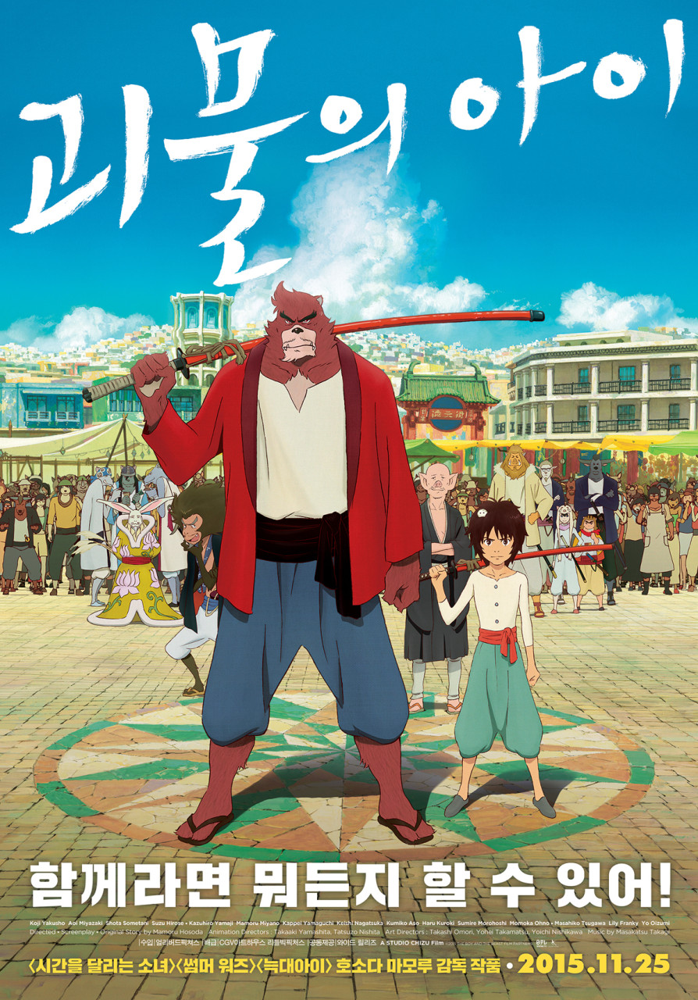

쌓인 기록 52편
| Title | 용감한 시민 |
|---|---|
| Release | 2023.10.25 |
| Runtime | 112분 |
| Age Rating | 15세 이상 관람가 |
| Director | 박진표 |
| Cast | 신혜선, 이준영 |
| Date | |
|---|---|
| Time | |
| Theater | |
| Screen |
| Title | 괴물의 아이 |
|---|---|
| Release | 015.11.25 |
| Runtime | 119분 |
| Age Rating | 12세 이상 관람가 |
| Director | 호소다 마모루 |
| Cast | 야쿠쇼 코지, 미야자키 아오이, 소메타니 쇼타, 히로세 스즈, 야마지 카즈히로 |

| Date | |
|---|---|
| Time | |
| Theater | |
| Screen |
| Title | 잃어버린 세계를 찾아서 |
|---|---|
| Release | 2008.12.17 |
| Runtime | 92분 |
| Age Rating | 전체 관람가 |
| Director | 에릭 브레빅 |
| Cast | 브렌든 프레이저, 조쉬 허처슨 |
| Date | |
|---|---|
| Time | |
| Theater | |
| Screen |